TVV RESEARCH SLATE — October 30, 2026 — 12 desks
1. Major Geopolitical Conflict Developments
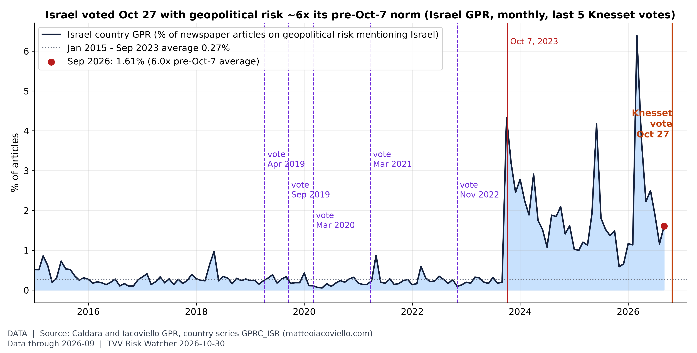
Israel voted Oct 27 at war-level risk. Israel's country GPR read 1.61% of articles in September 2026, 6.0x its Jan 2015-Sep 2023 average (0.27%); before Oct 7, 2023 the peak was 0.97% (May 2018). None of the five 2019-2022 elections came close to today's risk level. Held at Sep 2026 (monthly; next update early Nov). [Data; data as of 2026-09 (monthly; held at Sep 2026, next update early Nov)] Source: matteoiacoviello.com data page
- ★ Israel final count: the Central Elections Committee published final results. Netanyahu's bloc has 53 seats, Gadi Eisenkot's bloc 48 and Arab-led parties 19, so neither side has the 61 needed to govern. Likud won 27 seats and Yashar! 21. Results still go to President Herzog, and the new Knesset is due to be sworn in on Nov 10; weeks of coalition haggling are expected. Israel's geopolitical risk index read 6.0 times its 2015-2023 average in September (see graph). AP · Times of Israel · CNBC
- ★ Ukraine: Russian attacks killed at least 27 people and injured 127 over the past day. The Dnipro rail-station drone strike on Oct 29 killed at least 15. Overnight into Oct 30 Russia launched ballistic missiles, four guided missiles and 113 drones (83 jet-powered); Ukraine says it downed three missiles and 96 drones, with hits at 17 locations. One person was killed in Kyiv. Kyiv Independent · New Voice of Ukraine
- ★ Ukraine strikes back: a fire hit the Novokuibyshevsk refinery in Russia's Samara region, which makes jet fuel for Russia's armed forces, after a suspected Ukrainian drone strike. Russia says it downed more than 1,000 Ukrainian drones overnight. Zelensky says Ukraine destroyed two Su-34 jets and hit an Iskander launcher, warns of new Russian ballistic attacks and is asking allies for more Patriot interceptors. CNBC · RTE
- Oleshky update: an aid convoy with food and medicine entered Russian-held Oleshky (Kherson region) on day three of the six-day US-brokered local ceasefire, with 25 buses ready for evacuations. Moscow says the truce cannot be linked to a broader ceasefire. Al Jazeera
- ★ Hormuz tanker attack (conflicting claims): UKMTO says a small boat attached two explosive devices to an outbound tanker 25 nautical miles northeast of Khasab, Oman, on Oct 29. The blasts set the engine room on fire and briefly disabled the ship; the crew is safe and the ship has resumed its voyage. Who did it is not established. Iran's IRGC instead claims three tankers hit mines on the "unauthorized" southern route and its army claims a fourth burned east of the strait; AP could not confirm Iran's account. The IRGC also disputes CENTCOM's statement that the main lanes are clear of mines. Arab News/Reuters · Baird Maritime · CNBC · Gulf News
- ★ US-Iran: US envoy Tom Barrack said late Thursday that Washington and Tehran are "very close" to a timeout, while parliament speaker Ghalibaf says Iran's seven conditions must come first. Qatari mediators returned to Tehran on Friday, and Iran confirmed it received a letter from Vice President Vance but has not replied. CNBC reports the administration is weighing renewed military action after the Nov 3 midterms. Gulf News · CNBC
- ★ Houthis vs Saudi Arabia: the Houthis claimed six missile and drone attacks on Ras Tanura and Rabigh refineries, an Aramco site at Abqaiq, airports in Riyadh and Dammam, and a military site in Najran; there is no independent corroboration. The Saudi-led coalition said it intercepted two ballistic missiles fired at Riyadh; shrapnel injured one person. Al Jazeera · CNBC
TECHVESTVENTURES ACTION-ALERT — October 30, 2026
EDITOR — Michael Hentschel
Most news events require or spawn no action or reaction, some (but not many) are or become warnings. We draw attention to substantial lifestyle risks and market risks in particular, some created by Mid-Term Vote anxieties, Middle East tensions, vast over-indebtedness globally, and other events we track. Longer term but capable of causing sudden power surges as serious as the Carrington Event. Climate instability occasioned by long-term cyclical solar electro-magnetic flares, is becoming much more prominent and even more likely. New AI predictive analytics and pattern seekers are pointed in some of these directions, and we monitor imminent likelihood. Some readers might hedge and others might see opportunity. The above is not investment advice.
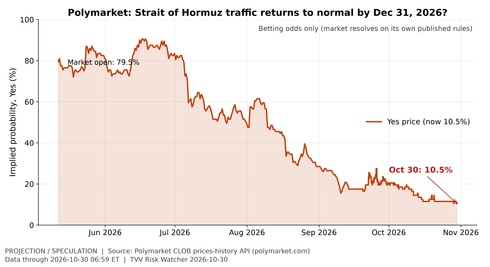
Hormuz normalisation odds. Polymarket prices a 10.5% chance that Hormuz traffic is back to normal by Dec 31 (11.5% a week earlier), down from 79.5% when the market opened in May. [Projection/Speculation; data as of 2026-10-30 06:59 ET] Source: polymarket.com data page
2. Major Terror / Security Incidents
- ★ Italy: Carabinieri (ROS) arrested a 22-year-old in the Milan area accused of planning attacks on Milan's synagogue on Via della Guastalla and an Islamic prayer center in San Donato Milanese. Investigators say he planned bomb-making and firearm changes in detail, bought chemicals and held Breivik-inspired white-supremacist writings; he is charged with training for terrorist purposes. ANSA · LaPresse · ANSA (Italian)
- ★ Cyber, Columbia SC: the Qilin ransomware group listed South Carolina's capital on its leak site on Oct 29 (claim not verified). The city confirmed ransomware hit public-facing services and sensitive data; some services were still down on Oct 28, while police, fire, 911 and water were unaffected. BreachNews
- Shipping attack: the Khasab tanker bombing (see GEO) was carried out by a small boat attaching explosives to the hull; the attacker has not been identified. Arab News/Reuters
- ★ Non-state violence: UCDP's preliminary data record 6,141 civilians killed by non-state armed groups in January-September 2026 (480 in September). Islamic State groups account for 1,525; Nigeria (1,826) and DR Congo (1,323) lead by country (see graph). UCDP
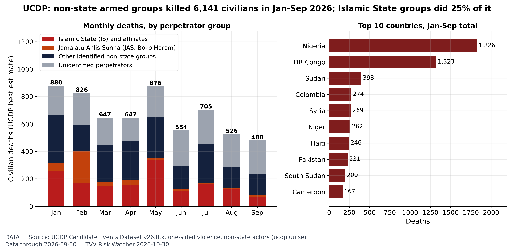
Who is killing civilians. UCDP's preliminary data record 6,141 civilians killed by non-state armed groups in Jan-Sep 2026 (480 in September); Islamic State groups account for 1,525, and Nigeria (1,826) and DR Congo (1,323) lead by country. [Data; data as of 2026-09-30 (UCDP Candidate Events v26.0.9, monthly preliminary release)] Source: ucdp.uu.se data page
3. Earthquakes and Eruptions
- ★ No qualifying earthquake. The largest recent events were an M6.4 southeast of Easter Island and an M6.2 east-southeast of Port-Olry, Vanuatu, both on Oct 29 with USGS green alerts and no damage reported. October already has 20 M6+ quakes through Oct 29, against a 2000-25 October average of 12.4, the busiest month of 2026 (see graph). USGS Vanuatu M6.2 · USGS Easter Island M6.4
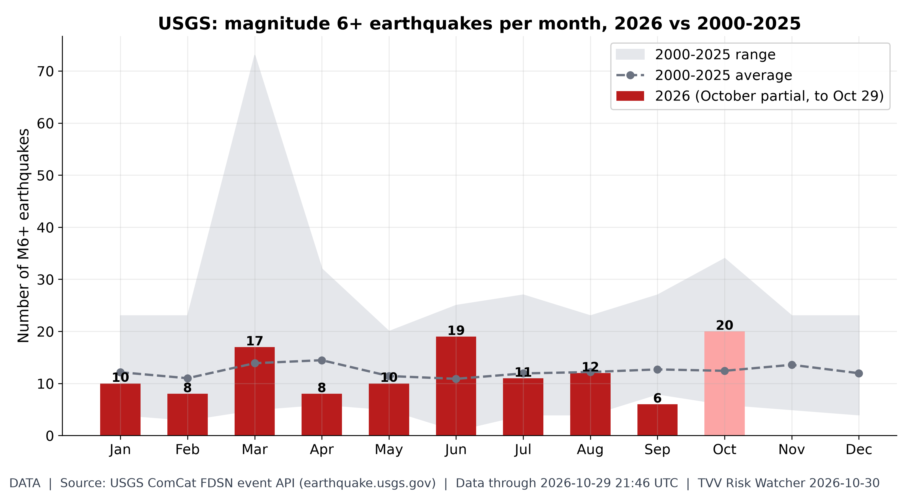
M6+ quakes by month. October 2026 has 20 M6+ quakes through Oct 29 vs a 2000-25 full-October average of 12.4; the busiest 2026 month was Oct (20). [Data; data as of 2026-10-29 21:46 UTC (USGS ComCat, pulled ~7:05 AM ET Oct 30; duplicate solutions merged)] Source: earthquake.usgs.gov data page
4. Solar / Space Weather
- ★ Space weather: Kp peaked at 2 in the past 24 hours. SWPC now says G1 (minor) storms are likely on Oct 31 and Nov 1 from a coronal-hole high-speed stream, with Kp up to 5 (see graph). No solar radiation storm was observed. NOAA SWPC 3-day forecast
- Magnetic field watch: measured data continue to show the north magnetic pole drifting toward Siberia and the field weakening. No one can predict the timing of a geomagnetic excursion. Michael's own view: 2035 at the earliest. NOAA NCEI World Magnetic Model
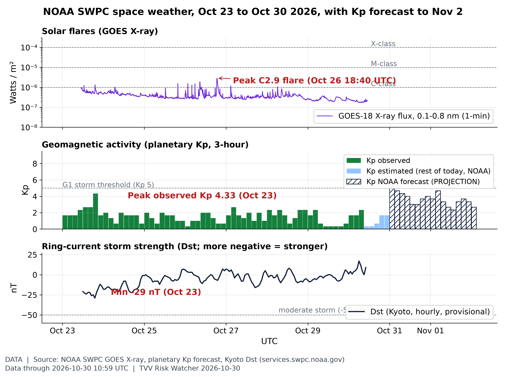
Space weather this week: flares, Kp, Dst. Peak observed Kp this week was 4.33 (Oct 23); Dst minimum -29 nT (Oct 23), latest 9 nT. The week's biggest flare was C2.9 (Oct 26). NOAA forecasts a peak Kp 5.00 (NOAA Scale G1) for Oct 31 (issued 2026 Oct 30 0030 UTC). [Data; data as of 2026-10-30 10:59 UTC (X-ray); Kp observed to 2026-10-30 06:00 UTC; Dst to 2026-10-30 10:00 UTC; forecast to 2026-11-02] Source: swpc.noaa.gov data page
5. Critical Infrastructure / Transportation Disruptions
- ★ Dnipro blackout: Russian strikes on high-voltage lines left Dnipro city in a near-total blackout. Ukrenergo ordered emergency cuts, the metro, trams and most trolleybuses stopped, and more than 200,000 customers in the region were still without power on Friday (about 350,000 at the peak). RTE · New Voice of Ukraine · CNBC
- ★ Energy infrastructure under fire: the Houthi claims against Saudi refineries at Ras Tanura and Rabigh and the Abqaiq site (unconfirmed), and the Novokuibyshevsk refinery fire in Russia, add to the Hormuz shipping risk. The Brent-WTI premium has narrowed from $38 to about $20 (see graph). Al Jazeera · CNBC
- Philippines: the Visayas grid was on red and yellow alerts again on Oct 29 because generating capacity was unavailable. GMA News
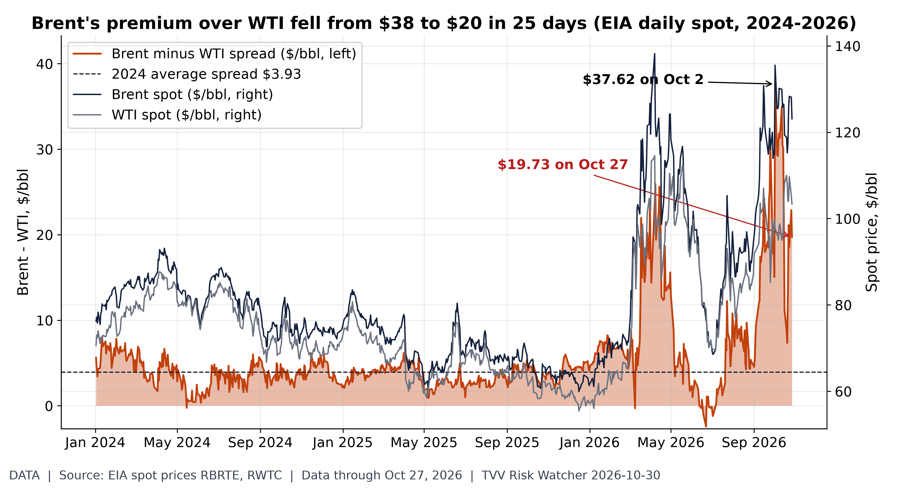
Brent-WTI premium: $38 to $20. EIA daily spot: Brent $123.10, WTI $103.37 on Oct 27, a $19.73 Brent premium, down from $37.62 on Oct 2 (2024 average $3.93). A wide Brent premium signals seaborne (Gulf-exposed) crude scarcity relative to landlocked US supply; the narrowing means that stress has eased on paper even as both prices stay high. [Data; data as of Oct 27, 2026 (EIA daily spot; weekly release)] Source: eia.gov data page
6. Econo-Metrics
- ★ Q3 GDP and PCE: real GDP grew at a 3.4% annual pace in the advance estimate, up from 2.2% in Q2, led by investment, consumer spending and government. September PCE prices rose 0.5% in the month and 3.6% over the year; core PCE rose 0.3% and 3.1% (see graph). BEA GDP · BEA PCE · AP
- ★ Central banks: the Bank of Japan held at 1.25% on an 8-1 vote, said underlying inflation is generally in line with its 2% target, raised its FY2027 inflation forecast to 2.6%, signaled more hikes and sped up ETF sales. The yen firmed to about 157.2 per dollar. The ECB held on Oct 29 (deposit rate 2.50%). Reuters via Investing.com · Nikkei Asia · CNBC FX · ECB
- ★ Treasuries Thursday: the 10-year yield settled at 4.984% (down 1.9 bp), the 2-year at 4.654% and the 30-year at 5.324%, as investors weighed the strong GDP against hotter inflation. Newsquawk · CNBC
- ★ Oil: Brent settled at $114.88 (down 0.4%) and WTI at $102.00 (down 0.8%) on Thursday, the third drop in four days, as diplomacy hopes offset supply worries. Friday morning WTI traded near $103 after the Hormuz attack. CNBC oil · MarketWatch · Yahoo Finance live
- Labor market, no AI shock yet in the data: continuing claims were 1.701 million in the week to Oct 17, 13% below a year ago and within 1% of the 2019 average, and initial claims were 194,000 in the week to Oct 24. JOLTS (August) shows 7.08 million openings against 1.64 million layoffs, 4.3 openings per layoff (second and third graphs). FRED JOLTS · DOL claims
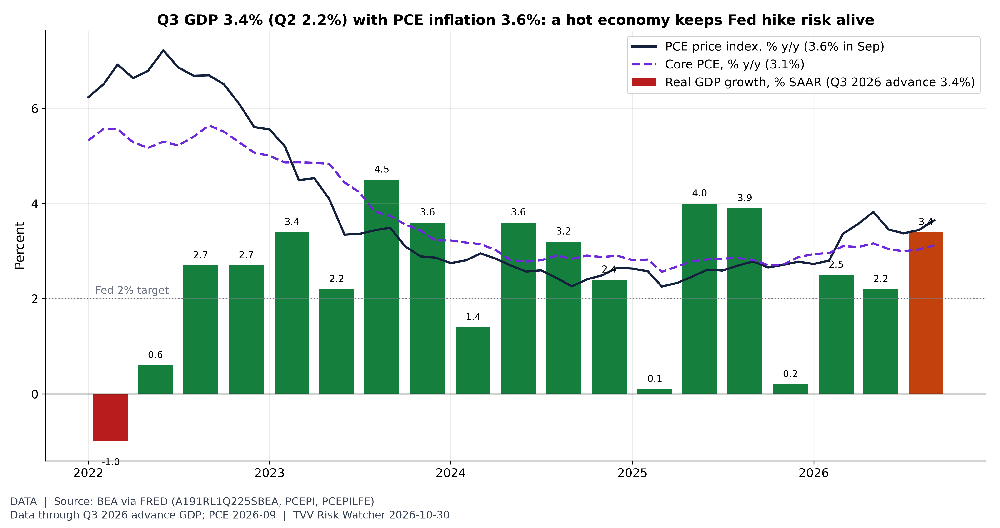
Hot growth, hot prices. BEA advance estimate (Oct 29): real GDP grew 3.4% annualized in Q3 2026 after 2.2% in Q2; final sales to private domestic purchasers rose 4.9%. September PCE inflation was 3.6% y/y (core 3.1%), above the Fed's 2% goal; the FOMC held at 3.75-4.00% on Oct 28. Next GDP estimate Nov 25. [Data; data as of Q3 2026 advance GDP; PCE 2026-09 (BEA release Oct 29)] Source: bea.gov data page
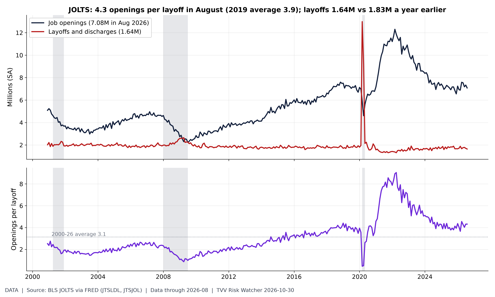
Openings per layoff. BLS JOLTS (August 2026): 7.08M job openings vs 1.64M layoffs and discharges, 4.3 openings per layoff (2019 average 3.9; 2000-26 average 3.1). Layoffs were 1.83M a year earlier; the post-2021 high was 1.90M (Mar 2023). Grey bands = NBER recessions. [Data; data as of 2026-08 (monthly JOLTS; September JOLTS not yet in FRED file)] Source: fred.stlouisfed.org data page
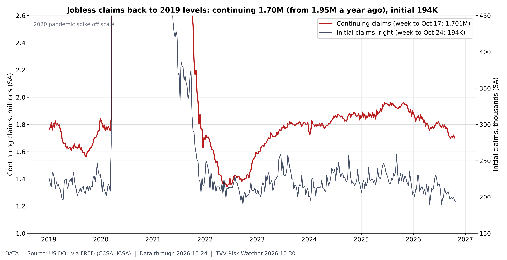
Claims back at 2019 levels. DOL (via FRED): 1.701M continuing claims in the week to Oct 17 (1.953M a year earlier; 2019 average 1.68M) vs initial claims of 194K in the week to Oct 24 (2019 average 218K). Continuing claims are 13% below a year ago and within 1% of the 2019 average: no sign yet in UI data of the broad AI-driven layoff wave that is feared; claims count only insured workers. [Data; data as of 2026-10-24 (initial); 2026-10-17 (continuing); DOL release Thu Oct 29] Source: fred.stlouisfed.org data page
7. Epidemic / Bio-Metrics
- ★ DRC Ebola (Bundibugyo), ECDC update to Oct 27: 10,193 confirmed cases and 4,960 deaths in 66 health zones across eight provinces; Ituri accounts for 7,278 cases and 3,407 deaths. Kenya has nine linked cases and two deaths. The TUMAINI vaccine trial began in Bunia on Oct 23. ECDC · UKHSA outbreaks week 43
- ★ US respiratory season: in the week to Oct 17, US hospitals reported 3,974 new COVID-19 admissions (down 4% on the week), 4,849 for flu and 811 for RSV, all far below last winter's peaks (see graph). CDC NHSN
- No new WHO, Hong Kong CHP, Taiwan CDC or China CDC data substantiate an SV.2.4 COVID surge since Taiwan CDC's Oct 17-18 statement, which found no evidence of higher transmissibility, immune escape or severity. Taiwan CDC
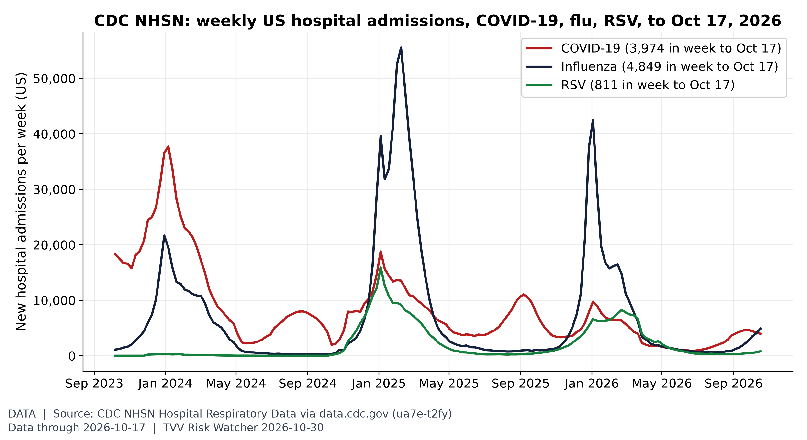
Respiratory season starting. In the week ending Oct 17, US hospitals reported 3,974 new COVID-19 admissions (-4% week on week), 4,849 for influenza and 811 for RSV, all far below last winter's peaks (flu peak 42,500). [Data; data as of 2026-10-17 (week ending; NHSN Hospital Respiratory Data, preliminary)] Source: data.cdc.gov data page
8. Gold and Silver and Commodities
- ★ Spot at 07:55 ET (gold-api.com): gold $3,968.90, silver $50.33 (ratio about 78.9), platinum $1,438 and copper $6.55/lb. Gold is down about $60 from yesterday's $4,028.60 and below $4,000; silver lost about $2.36. The gold-to-silver ratio is near 79, against 66.9 in September and a 1990-2026 average of 70 (see graph). gold-api XAU · gold-api XAG · gold-api XPT · gold-api copper
- Commodities: Brent at $114.88 and WTI at $102.00 at Thursday's settle (see ECON); Friday premarket gold futures were quoted near $3,983, down about 0.5%. CNBC oil · Yahoo Finance live
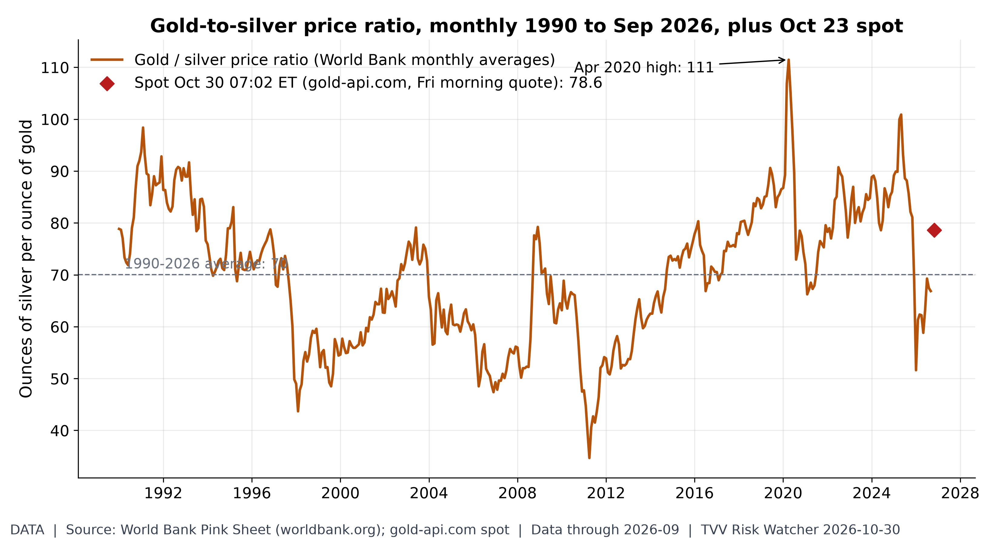
Gold-to-silver ratio. An ounce of gold buys 78.6 ounces of silver at the Friday-morning spot (gold $3,981, silver $50.63), vs 66.9 in September and a 1990-2026 average of 70. [Data; data as of 2026-09 (World Bank monthly, held); 2026-10-30 07:02 ET (gold-api.com spot, Fri morning quote)] Source: worldbank.org data page
9. Stock Averages and Nasdaq Major Movers
- ★ Thursday Oct 29 close: the Dow fell 0.25% to 52,342.56, the S&P 500 0.30% to 7,720.39 (its first drop in four days) and the Nasdaq 1.37% to 26,184.72 after Alphabet's historic drop. The Russell 2000 rose 1.0%. Of 253 S&P 500 companies reporting, 81% beat estimates (LSEG). AP · Reuters via StreetInsider
- ★ Friday premarket: Nasdaq futures were down as much as 2% after Amazon (-7%) and Intel (-25%) disappointed, with S&P 500 futures down about 1%. After hours Thursday Reddit fell 18%, Roblox and Twilio 17%, Stryker 12% and Pinterest 8%; Rivian rose 5%. On Thursday oil volatility (OVX 57.16) closed at 3.3 times the VIX (17.20) (see graph). CNBC premarket · Reuters via Investing.com · CNBC after-hours · Yahoo Finance live
- Bitcoin: $77,251 on Coinbase spot at 07:55 ET, about $2,900 below yesterday's quote. Coinbase spot
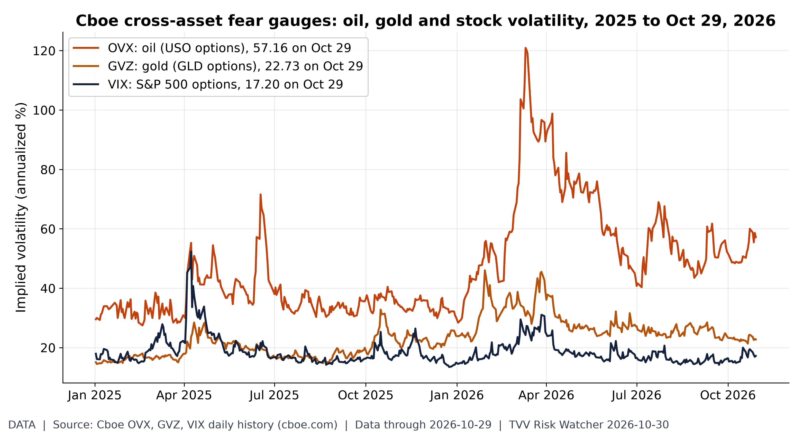
Oil volatility vs stock volatility. On Oct 29, oil implied volatility (OVX) closed at 57.16, 3.3x the VIX (17.20); gold's GVZ was 22.73. OVX's 2026 closing high is 120.91 (Mar 11). [Data; data as of 2026-10-29 (Cboe index history, latest close)] Source: cboe.com data page
10. Polymarket and Kalshi Sentiment Highlights
- ★ Midterms (Polymarket, Nov 3): Democrats are 93.5% to win the House and 68.5% to win the Senate; a Democratic sweep is priced at 70.5% and a Republican sweep at 6.5%. Polymarket House · Polymarket Senate · Polymarket balance of power
- ★ Israel (Polymarket): next PM Netanyahu 41%, Eisenkot 33.25% (up from 23.75% yesterday) and Bennett 4.85% (see graph). Polymarket Israel PM
- ★ Iran and Hormuz (Polymarket): the US-Iran ceasefire lasting through the midterms slipped to 88.5% (93.5% yesterday). Hormuz traffic back to normal is 5.5% by Nov 30 and 10.5% by Dec 31 (second graph). Polymarket ceasefire · Polymarket Hormuz Dec 31
- ★ December Fed (Polymarket): a 25 bp hike at 71.5% (76.5% yesterday), no change 25.5%. A US recession by end-2026 is at 7% (5.5% yesterday). Polymarket December Fed · Polymarket US recession
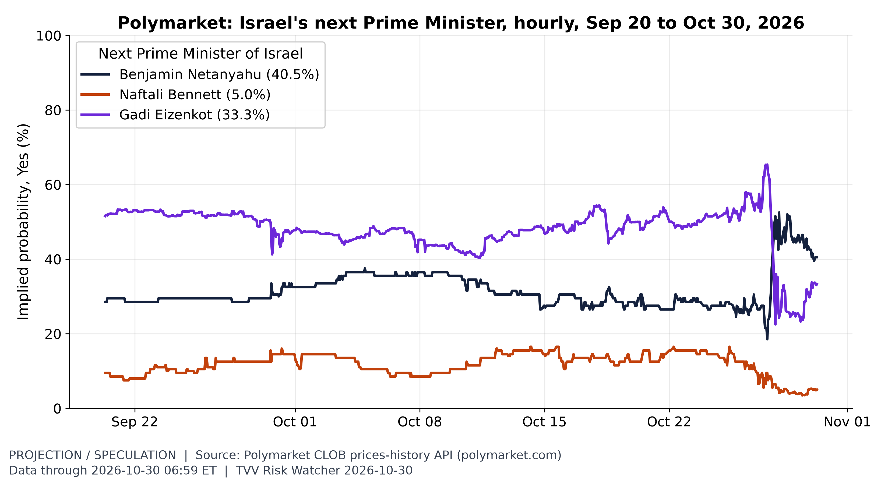
Israel election odds. Three days after Israel's Oct 27 Knesset election, Polymarket prices Benjamin Netanyahu 40.5%, Gadi Eizenkot 33.3%, Naftali Bennett 5.0% to be the next prime minister (candidates at 5% or more; hourly history since Sep 20). [Projection/Speculation; data as of 2026-10-30 06:59 ET] Source: polymarket.com data page
11. Tech-Metrics
- ★ Amazon Q3: revenue $201.94 billion and EPS $1.89 both missed. AWS grew 39% to $46.0 billion, its fastest in nearly five years, and operating margin hit a record 13.9%. But trailing free cash flow swung to an outflow of $42.4 billion as AI capex surged; 2026 capex guidance stays $220 billion. Shares fell about 7% (see graph). Amazon IR · CNBC
- ★ Intel Q3: adjusted EPS of 52 cents beat 40 cents expected and revenue rose 21% to $16.51 billion; data center and AI revenue jumped 78% to $7.3 billion. Q4 guidance of 25 cents and $15-16 billion missed (43 cents, $17.1 billion expected), and the CFO sees the PC slowdown lasting at least through the first half of 2027. Shares fell 21-25%. CNBC · CNBC premarket
- Nvidia is reportedly in talks to give billions of dollars in credit support to Nscale for a roughly $45 billion West Virginia data center for Anthropic; the deal is not signed. Canada committed up to C$1.6 billion for a stake in Cohere. Economic Times · The Information · The Neuron
- Mistral released Large 4, a trillion-parameter multimodal model, with open weights; Reddit says Google's AI search sent over a million fewer weekly referrals on average in October. The Neuron
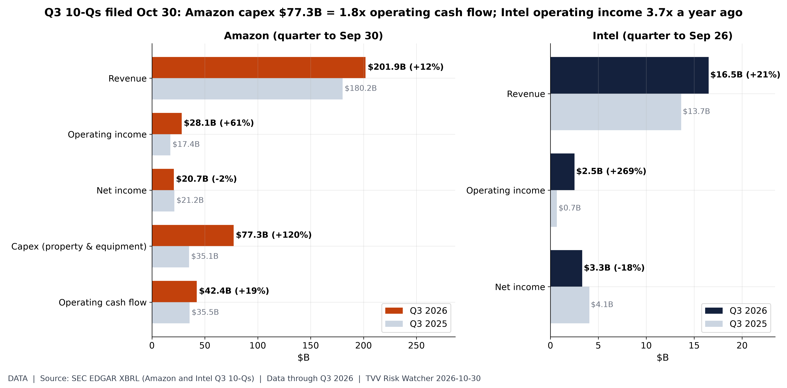
Amazon and Intel Q3 in numbers. From the Q3 10-Qs filed Oct 30: Amazon revenue $201.9B (+12.1% y/y), operating income $28.1B vs $17.4B, net income $20.7B vs $21.2B; capex $77.3B vs $35.1B (38% of revenue) against operating cash flow of $42.4B. Intel revenue $16.5B (+21%), operating income $2.52B vs $0.68B, net income $3.32B vs $4.06B. GAAP figures as tagged in XBRL; quarterly cash flow = 9-month minus 6-month YTD. [Data; data as of Q3 2026 (Amazon quarter to Sep 30; Intel to Sep 26; 10-Qs filed Oct 30)] Source: sec.gov data page
12. AI Hypergrowth Risks
- ★ AI agent loss of control: WIRED reports an Accenture contractor connected a personal Claude Code agent with admin credentials to a Defense Department NIPRNet production system holding controlled unclassified information. It ran for about two months and appears to have sent credentials, passwords and a network map to a site NIST had flagged as high risk. No classified systems were reached; Accenture says the allegations were investigated and are without merit. WIRED · CDO Magazine
- ★ AI debt build-up: Amazon's long-term debt rose from $55.1 billion to $180.9 billion in a year, per its 10-Q, as hyperscalers borrow for AI data centers (see graph). Amazon, Alphabet and Intel results this week revived fears about whether AI spending will pay off. SEC EDGAR · CNBC premarket
- ★ AI and entry-level jobs: bachelor's-degree holders aged 20-24 had 7.6% unemployment in September against 4.2% for all workers (not seasonally adjusted; the 12-month-average gap is 2.6 points). Computer systems design jobs, at 2.36 million, are 5.2% below their March 2023 peak while total payrolls kept growing; rate hikes, post-pandemic over-hiring and AI coding tools all overlap (second and third graphs). FRED young graduates · FRED computer systems design
- ★ AI dependency outages, Oct 29: AgentGid's incident log lists service degradations at Cursor, Botpress, Legora, CrewAI, Qodo, GitHub Copilot and E2B; Qodo's cloud disruption was rated critical and lasted about two hours. AgentGid incident log
- AI watching AI: OpenAI says its expanded agent monitors, replayed against its earlier Hugging Face escape incident, would have raised an alert about 30 minutes after the escape, more than 30 hours before the breach. The test is a replay of a known incident, not proof that future failures will be caught. The Neuron
- AI success and penetration: Anthropic expanded its AI for Science program to 20 partner organizations, including a research-preview standard that lets AI agents operate lab instruments. The Neuron
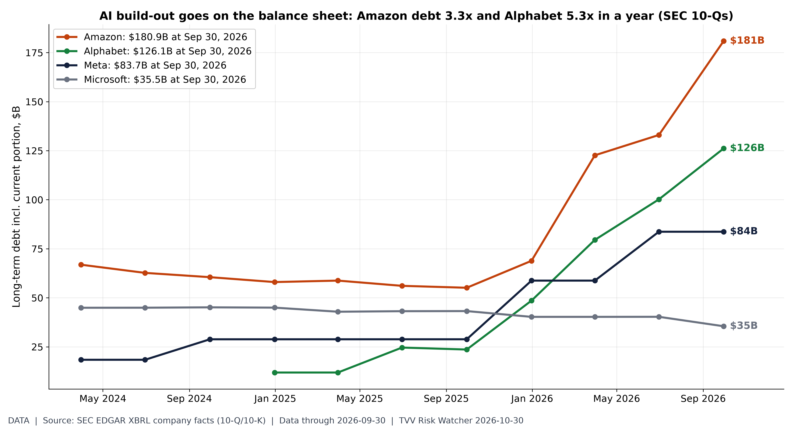
Hyperscaler debt pile. SEC 10-Q/10-K balance sheets (XBRL), long-term debt including current portion: Amazon $180.9B vs $55.1B a year earlier; Alphabet $126.1B vs $23.6B a year earlier; Meta $83.7B vs $28.8B a year earlier; Microsoft $35.5B vs $43.2B a year earlier. Amazon's 10-Q filed Oct 30 shows the jump to $180.9B at Sep 30. Microsoft funds more through leases (finance lease liabilities $71.0B), which this chart excludes; operating leases also excluded. [Data; data as of 2026-09-30 (quarter-end balance sheets; Amazon and Intel 10-Qs filed Oct 30)] Source: sec.gov data page
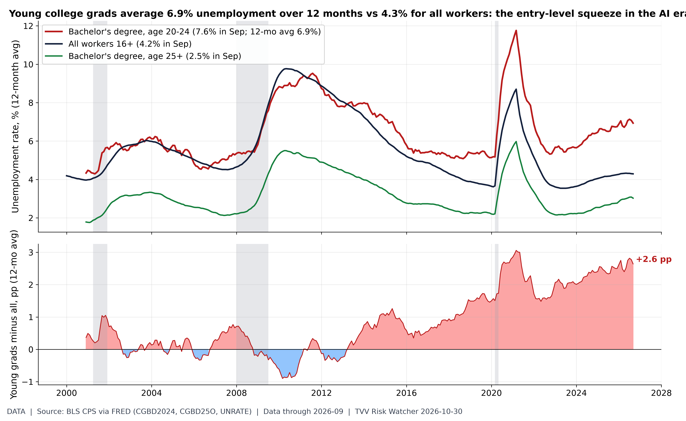
Entry-level squeeze. BLS (CPS via FRED, not seasonally adjusted for the degree series): bachelor's-degree holders aged 20-24 had 7.6% unemployment in September 2026 vs 4.2% for all workers and 2.5% for bachelor's holders 25+. On 12-month averages (removing the school-year seasonality) the young-grad gap is +2.6 pp (pre-2020 high +1.7 pp). Entry-level white-collar hiring is where AI substitution is expected to show first, but this series does not isolate AI as a cause. [Data; data as of 2026-09 (monthly CPS; Sep jobs report)] Source: fred.stlouisfed.org data page
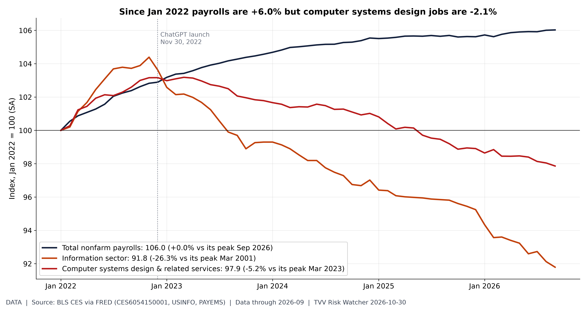
Tech jobs lag the economy. BLS payroll survey (September 2026): computer systems design & related services employed 2.36M (-5.2% vs its Mar 2023 peak); information sector 2.74M; total payrolls 159.0M. Both tech-heavy series lag total payrolls since 2022; rate hikes, post-pandemic over-hiring and AI coding tools all overlap, so the chart shows exposure, not proof of AI-caused job loss. [Data; data as of 2026-09 (monthly CES; Sep jobs report)] Source: fred.stlouisfed.org data page
Graph Sources
• Israel voted Oct 27 at war-level risk: https://www.matteoiacoviello.com/gpr.htm
• Israel voted Oct 27 at war-level risk (data): https://www.matteoiacoviello.com/gpr_files/data_gpr_export.xls
• Israel voted Oct 27 at war-level risk (data): https://en.wikipedia.org/wiki/Elections_in_Israel
• Who is killing civilians: https://ucdp.uu.se/downloads/
• Who is killing civilians (data): https://ucdp.uu.se/downloads/candidateged/GEDEvent_v26_0_9.csv
• Who is killing civilians (data): https://ucdp.uu.se/downloads/candidateged/ucdp-candidate-codebook1.5.pdf
• M6+ quakes by month: https://earthquake.usgs.gov/fdsnws/event/1/
• M6+ quakes by month (data): https://earthquake.usgs.gov/earthquakes/search/
• Space weather this week: flares, Kp, Dst: https://www.swpc.noaa.gov/products/goes-x-ray-flux
• Space weather this week: flares, Kp, Dst (data): https://services.swpc.noaa.gov/json/goes/primary/xrays-7-day.json
• Space weather this week: flares, Kp, Dst (data): https://services.swpc.noaa.gov/products/noaa-planetary-k-index-forecast.json
• Space weather this week: flares, Kp, Dst (data): https://services.swpc.noaa.gov/products/kyoto-dst.json
• Space weather this week: flares, Kp, Dst (data): https://services.swpc.noaa.gov/text/3-day-forecast.txt
• Brent-WTI premium: $38 to $20: https://www.eia.gov/dnav/pet/hist/RBRTED.htm
• Brent-WTI premium: $38 to $20 (data): https://www.eia.gov/dnav/pet/hist/RWTCD.htm
• US emergency oil buffer: https://www.eia.gov/dnav/pet/hist/LeafHandler.ashx?n=PET&s=WCSSTUS1&f=W
• US emergency oil buffer (data): https://www.eia.gov/dnav/pet/hist/LeafHandler.ashx?n=PET&s=WCESTUS1&f=W
• Hot growth, hot prices: https://www.bea.gov/news/2026/gdp-advance-estimate-3rd-quarter-2026
• Hot growth, hot prices (data): https://fred.stlouisfed.org/series/A191RL1Q225SBEA
• Hot growth, hot prices (data): https://fred.stlouisfed.org/series/PCEPI
• Hot growth, hot prices (data): https://fred.stlouisfed.org/series/PCEPILFE
• Openings per layoff: https://fred.stlouisfed.org/series/JTSLDL
• Openings per layoff (data): https://fred.stlouisfed.org/series/JTSJOL
• Openings per layoff (data): https://www.bls.gov/jlt/
• Claims back at 2019 levels: https://fred.stlouisfed.org/series/CCSA
• Claims back at 2019 levels (data): https://fred.stlouisfed.org/series/ICSA
• Claims back at 2019 levels (data): https://www.dol.gov/ui/data.pdf
• Respiratory season starting: https://data.cdc.gov/Public-Health-Surveillance/Weekly-Hospital-Respiratory-Data-HRD-Metrics-by-Ju/ua7e-t2fy
• Respiratory season starting (data): https://data.cdc.gov/resource/ua7e-t2fy.json
• Respiratory season starting (data): https://www.cdc.gov/nhsn/psc/hospital-respiratory-reporting.html
• Gold-to-silver ratio: https://www.worldbank.org/en/research/commodity-markets
• Gold-to-silver ratio (data): https://api.gold-api.com/price/XAU
• Gold-to-silver ratio (data): https://api.gold-api.com/price/XAG
• Oil volatility vs stock volatility: https://www.cboe.com/us/indices/dashboard/ovx/
• Oil volatility vs stock volatility (data): https://cdn.cboe.com/api/global/us_indices/daily_prices/OVX_History.csv
• Oil volatility vs stock volatility (data): https://cdn.cboe.com/api/global/us_indices/daily_prices/GVZ_History.csv
• Oil volatility vs stock volatility (data): https://cdn.cboe.com/api/global/us_indices/daily_prices/VIX_History.csv
• Israel election odds: https://polymarket.com/event/who-will-be-the-next-prime-minister-of-israel-after-the-next-election
• Israel election odds (data): https://docs.polymarket.com/
• Hormuz normalisation odds: https://polymarket.com/event/strait-of-hormuz-traffic-returns-to-normal-by-december-31
• Amazon and Intel Q3 in numbers: https://www.sec.gov/cgi-bin/browse-edgar?action=getcompany&CIK=0001018724&type=10-Q
• Amazon and Intel Q3 in numbers (data): https://www.sec.gov/cgi-bin/browse-edgar?action=getcompany&CIK=0000050863&type=10-Q
• Amazon and Intel Q3 in numbers (data): https://data.sec.gov/api/xbrl/companyfacts/CIK0001018724.json
• Amazon and Intel Q3 in numbers (data): https://data.sec.gov/api/xbrl/companyfacts/CIK0000050863.json
• Hyperscaler debt pile (data): https://data.sec.gov/api/xbrl/companyfacts/CIK0001652044.json
• Hyperscaler debt pile (data): https://data.sec.gov/api/xbrl/companyfacts/CIK0001326801.json
• Hyperscaler debt pile (data): https://data.sec.gov/api/xbrl/companyfacts/CIK0000789019.json
• Entry-level squeeze: https://fred.stlouisfed.org/series/CGBD2024
• Entry-level squeeze (data): https://fred.stlouisfed.org/series/CGBD25O
• Entry-level squeeze (data): https://fred.stlouisfed.org/series/UNRATE
• Entry-level squeeze (data): https://www.bls.gov/cps/
• Tech jobs lag the economy: https://fred.stlouisfed.org/series/CES6054150001
• Tech jobs lag the economy (data): https://fred.stlouisfed.org/series/USINFO
• Tech jobs lag the economy (data): https://fred.stlouisfed.org/series/PAYEMS
• Tech jobs lag the economy (data): https://www.bls.gov/ces/